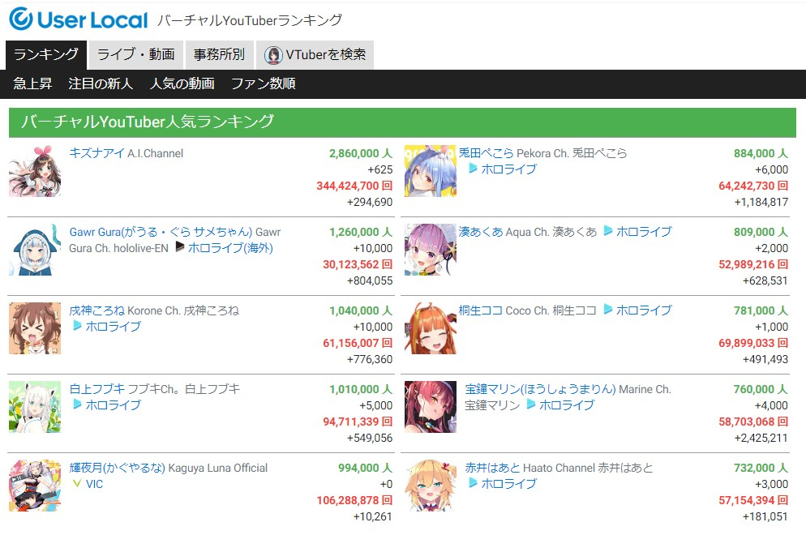

VTuber全球總數13000位突破，訂閱前十幾乎都是hololive2020-11-09
日本數據調研公司 User Local 最新報告，備受網路世代歡迎的虛擬主播（Virtual YouTuber；VTuber）市場逐漸增長，全球目前已正式突破 13,000 位 VTuber 活躍當中，其中訂閱數排行前十位中，就有 8 位是 hololive Production 旗下的 VTuber。 根據報告，User Local 從 2018 年超過 1,000 位起便開始持續追蹤，人數增長最快時期在 2018 年，2019 年後稍微趨緩但仍持續增長，2020
年 1 月 15 日 VTuber 全球突破 1 萬人，等於今年增加了有 3000 位以上的 VTuber。